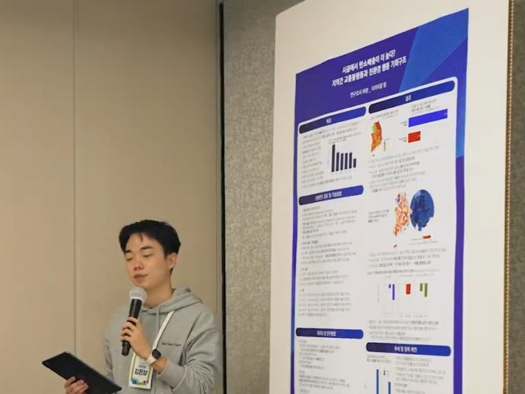
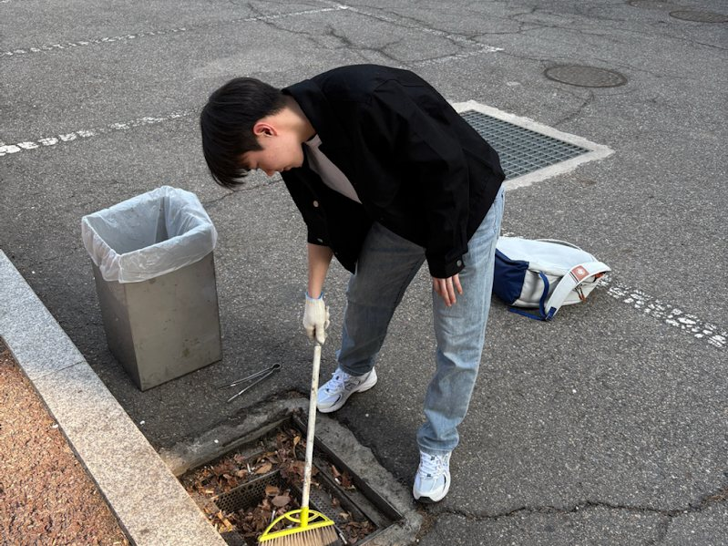
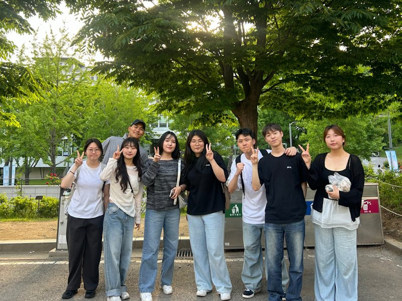

Public Engagement

Net Zero Friends Research Team “MossLink”
Presidential Commission on Carbon Neutrality and Green Growth of South Korea · July 2025 – Dec 2025
- Analyzed transportation infrastructure in South Korea and applied spatial inequality theory
- Reviewed government research and campaigns on climate change and carbon neutrality
- Proposed environmental policies addressing both structural opportunity gaps and regional transportation inequality
- Analyzed spatial transportation inequality and its impact on carbon emissions and pro-environmental behavior in South Korea
- Combined GIS visualization and regression model to reveal that limited transit accessibility in rural areas constrains environmental engagement


Student Innovation Project “Ocean and Fellowship”
Yonsei University Institute for Higher Education Innovation · Yonsei Social Innovator · Mar 2024 – Present
- Installed storm drain filters and organized cleanups to reduce flooding and prevent ocean pollution, thereby addressing both environmental and social challenges
- Promoted collaboration between environmental NGOs and university clubs to expand marine protection efforts
- Received the Final Presentation Award at the flagship event of the Institute for Higher Education Innovation
- Selected as Yonsei Social Innovator for leadership in multiple social innovation activities
Ecobuddy Institute
Non-Governmental Organization · Jan 2023 – 2024
- Supported wildlife monitoring of species inhabiting areas along the Han River to promote urban biodiversity
- Served on the publicity team, creating and posting reports on environmental protection
- Studied wildlife species and environmental policies to enhance conservation policies
- Delivered a presentation on environmental sociology for NGO members and local citizens
Seocho Youth Library
Teacher · Mar 2015 – Sep 2019
- Designed weekly interactive activities for elementary school students, including direct observation of animals and eco-friendly crafts with natural materials, to foster environmental awareness and ecological empathy
K-Green Foundation
2014
- Young Green Leader: Studied wetland preservation and local ecosystem management through field-based environmental education.
- Best Green Leader: Visited Toyooka Village in Japan to learn about its successful stork restoration project and experience community-driven eco-friendly urban practices.
- Continued to support the foundation through regular donations and volunteer activities.